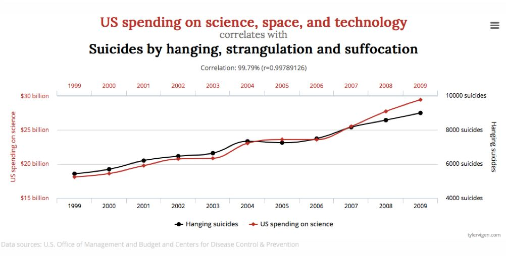

收录于合集 #专栏文章 11个
文献来源：
-
中室牧子、津川友介『「原因と結果」の経済学: データから真実を見抜く思考法』ダイヤモンド社、2017
-
飯田健、松林哲也「選挙研究における因果推論の研究動向」『選挙研究』27巻1号、2011
《“原因与结果”的经济学：从数据看透真实的思维方式》
本书一开始便向读者提出三个问题：定期接受体检的话会变得更加长寿吗？让小孩看电视会使其学习成绩下降吗？上了录取分数线较高的大学以后的收入会更高吗？虽然很多人的回答会是Yes，然而经济学的有力研究却对这三个问题全部给出了否定的答案。
对以上三个问题给出肯定答案的人，错在混淆了“因果关系”和“相关关系”两个概念。所谓因果关系，是指两件事情当中一件作为原因发生，另一件便会作为结果出现。而所谓相关关系，是指两件事情看上去虽然一方变化另一方也会变化，但其中并不存在原因和结果的关系。虽然定期接受体检与长寿之间存在一定相关关系，然而我们却不能据此就说“因为定期接受体检，所以寿命会变得更长”。
确定因果关系一般需要确认三点：第一，是否纯属偶然；第二，是否存在“第三变量”；第三，是否存在“相反因果关系”。美军情报分析员泰勒•维根（Tyler Vigen）在其著作《虚假相关》（SpuriousCorrelations）中介绍了大量令人咋舌的相关案例，例如1999年至2009年美国在科学、太空、科技方面的投入与同年度通过上吊和窒息方式自杀的人数的相关系数竟高达0.9979！然而即使如此，我们也不能说“因为美国在科学、太空、科技方面的投入增加了，所以通过上吊和窒息方式自杀的人数变多了”，他们之间的这种关系完全是偶然存在的。

在社会科学中判明因果关系绝不是一件容易的事情。原因在于，要证明因果关系的存在，就必须将原因发生情况下的“事实”结果与原因不发生情况下的“反事实”结果进行比较。但是，人类无法通过时光机回到过去，因此也就无法制造并观察“反事实”情况下的结果。为了克服这一困难，社会科学家一般通过“最佳相似值”来替代反事实的结果。例如，一家连锁珠宝商店部分店铺进行了广告推广，部分店铺没有进行广告推广。虽然我们不能直接观察到进行广告推广的店铺如果不进行广告推广的营业额会是多少，但是我们可以用未进行广告推广的店铺的平均营业额来代替这一反事实结果。
进行因果推论的一种比较理想的形式是“随机化比较试验”。例如，在测试新药时通常会把生病的小白鼠随机分为两组，然后比较使用药物的“实验组”和未使用药物的“控制组”之间的治愈率，以此来确定药物是否有效。之所以必须将“原因”进行随机分配，是因为按照人类自身意志所做出的选择往往会出现“选择性偏差”（selection bias）。例如，定期接受体检的人往往具有更高的健康意识，而不进行体检的人往往健康意识比较淡薄，因此我们无法直接将两者进行简单的比较。
运用随机化比较试验的一个经典案例是“兰德医疗保险实验”。该实验是美国经济学家约瑟夫•纽豪斯（Joseph Newhouse）在兰德公司工作期间带领进行的，于1971～1986年间以美国6个城市2750户居民为对象实施。为了进行该实验，纽豪斯团队专门开设了一家民间医疗保险公司，为研究对象提供免费的医疗保险。然而，保险的医疗费个人负担比例是由纽豪斯团队随机进行分配的。其中，控制组的医疗费个人负担比例为0，三个实验组的医疗费个人负担比例分别为25%、50%、95%。研究结果表明，医疗费的个人负担比例越高，每个人的年均医疗花费便会越少，并且每个人的年均就诊次数也会更少（负担为0与负担为95%的组间差距大约有30%）。然而，医疗费的个人的负担比例和健康状态之间却并没有发现因果关系，在高血压等30项健康指标方面，控制组和实验组并没有表现出具有统计显著性的差异。也就是说，提高医疗费的个人负担比例并不会导致健康状况的恶化，相反却可以防止小病大医，节约国家总体医疗费用。不过需要注意的是，如果只看低收入人群样本，个人医疗负担比例的增加确实导致了健康状况的恶化。
“随机化比较试验”虽然较为理想，然而却并不容易实施。将作为研究对象的人进行随机分组不仅难以操作，而且可能招致研究对象的反感，甚至出现有违伦理的情况。相比从随机化比较试验中获取的实验数据，研究者更经常使用的是从日常经济活动的结果中得到的数据、从政府的统计调查等得到的数据等观察数据。在使用观察数据的时候，我们首先应该考虑的是能不能找出“彷佛进行了人为试验一样”的情况。例如由于法律或制度的变更、自然灾害、冲突等任何人都想象不到的变化，导致类似进行了随机化比较试验一样的情况出现，因此可以判明两个变量之间的因果关系。这种方法可以称作“自然试验”。例如，如果想探究“医生性别”与“患者死亡率”之间是否存在因果关系，我们可以将美国的院派医生（hospitalist）制度看作一种自然试验。由于院派医生不能主动选择自己的患者，患者也不能主动选择自己的院派医生，因此可以将此看作是将患者随机分配到男性医生和女性医生中的一项自然试验。根据学者津川有介的研究，女性医生担当的患者要比男性医生担当的患者30日死亡率低出0.4%，这一死亡率差大致相当于美国10年时间通过各种努力所降低的患者的死亡率。
《选举研究中因果推论的研究动向》
在日本的政治学和社会学研究中，高根正昭1979年的著作《创造的方法学》对因果推论的方法进行了最为权威的说明，至今为止仍作为经典教材被众多大学使用。高根指出了因果关系的三个条件：第一，自变量的变化要发生在因变量的变化之前；第二，两个变量之间要存在共同变化的关系；第三，其他重要的变量没有发生变化。其中，高根最为重视的是第三个条件，即是否排除了其他重要变量的影响。考虑到实验方法在社会科学中应用的困难，高根主要介绍了通过多变量分析对变量进行统计控制的思考方法。然而，通过这种方法进行因果推断仍存在一些弊端，例如缺少关于需要控制的变量的取舍标准、投入回归模型的变量过多（有的模型自变量数量甚至超过了20个！）、数据不满足统计模型的前提等等。
在统计学和计量经济学中，基于潜在结果模型的因果推断方法近年来成为主流趋势之一。潜在结果模型强调观察同一单位在接受干预和未接受干预状态下的不同结果。例如，要推断大学教育对政治知识量的影响，我们就需要观察同一个人接受大学教育后的政治知识量和没有接受大学教育的政治知识量。但是，这种观察其实是不可能的，因为同一个人不可能同时接受大学教育而又不接受大学教育。也就是说，两种潜在结果中我们只能观察到其中一种，而另一种可以看作是缺损数据问题。通过数学计算可以证明，如果对众多样本随机进行干预，我们便可以通过比较干预组和控制组的结果来对所有单位根据潜在结果模型计算的因果关系进行一致性和无偏估计。（详细可参见李文钊：《因果推理中的潜在结果模型：起源、逻辑与意蕴》，载《公共行政评论》2018年第1期）也就是说，如果可以由研究者随机决定高中毕业生是否进入大学学习，那么便可以在4年后通过比较进入大学者和未进入大学者的政治知识量，来确定大学教育和政治知识量之间的因果关系。然而如果不进行随机分配的话，便存在大学入学者在入学之前政治知识量便高于非大学入学者的可能性，即计量经济学中的选择性偏差问题。为了克服选择性偏差，可以选择在回归方程中添加一些控制变量。在大学教育与政治知识量的例子中，我们可以将大学入学前的政治关心度以及父母的经济地位两个变量投入回归方程之中。然而，要考虑到影响原因和结果的所有变量是非常困难的，并且有时会存在一些难以观察的变量（例如一个人的智力水平），因此通过控制变量和回归方程来推断因果关系并非易事。
基于潜在结果模型的因果推断有三类研究设计是比较理想的：实验设计、准实验设计（quasi- experiment）、倾向值匹配。研究者能够通过人为操作的方式对干预变量进行分配的研究设计便是实验。实验一般可分为实验室实验、田野试验以及调查试验。堀内勇作、今井耕介和谷口尚子通过网络调查试验的方法验证了政治信息量与投票参与的关系。他们将被调查者随机分组，分别接触关于自民党的信息、关于民主党的信息、关于两党的信息、完全无关的信息。由于分组是随机进行的，因此可以认为被调查者除了政治信息量之外的属性是基本近似的，由此可以推论各组之间投票率的差异是由于政治信息量造成的。在准实验设计中研究者虽然不能直接控制干预变量的分配，但是却利用因为各种原因产生的近似于随机分配的状况作为事例，来做出近似的控制组和干预组。关于准实验设计时使用的方法，有面板数据分析、工具变量法、断点回归等（此处就不一一详细介绍）。倾向值匹配法是一种基于能够观察的性质而人为制造出比较组的方法。例如如果只有性别和年龄会对干预变量的分配产生影响的话，我们便可以找出年龄和性别相似但是干预状态不同的分组，从而对结果变量进行比较。但是，如果有不可观察的变量发挥重要作用的时候，由于不能对该变量进行匹配，所以可能会产生选择性偏差。
（本文作者系政观特邀作者 神户大学法学研究科周源 ）
编后记：
上周，政观编辑部经过讨论决定对政文观止Poliview的推送制度实行进一步的创新，在坚持编辑部全体成员负主要责任的原则下，试行特邀作者不定期撰文制度，我们也诚恳地欢迎海内外从事社会科学研究的同仁通过我们平台发表高见，但内容需与比较政治经济学、当代中国研究与政治科学方法论密切相关（ 我们强调议题导向必须始终遵循高度学术化而非“公知化”的原则 ）。当然，各位读者朋友的宝贵意见和善意批评都将一如既往地受到我们的欢迎。


周源
感谢您支持学术公益
微信扫一扫赞赏作者 __赞赏
已喜欢，对作者说句悄悄话
取消 __
发送给作者
发送
最多40字，当前共字
上一页 1/3 下一页
长按二维码向我转账
感谢您支持学术公益
受苹果公司新规定影响，微信 iOS 版的赞赏功能被关闭，可通过二维码转账支持公众号。